Learning to take photos sounds ordinary. Learning photography sounds deeper. When you say you study composition, it instantly sounds high-end. If I asked you to list composition rules, how many could you name?
Photography is not an exam, and there are no iron rules. The main point of composition is to organize the elements of the frame and draw in the viewer. There are countless methods, so let us cover the classics. Today we go from easy to deep and count through 20 practical composition rules.
1. Rule of thirds
Divide the whole frame into a nine-part grid like the picture below. Many cameras have a grid display built in. This method places the important elements on one or more lines, or where the lines cross.
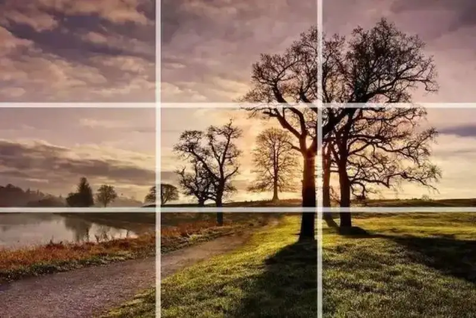
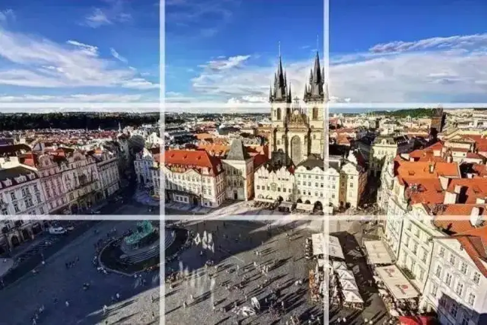
2. Center and symmetry
The photo below is the Half Penny Bridge in Dublin. You can place the main object in the center of the frame to show a symmetric effect.
Scenes with reflections are also a great chance to use symmetry. The photo below uses both the rule of thirds and symmetry.
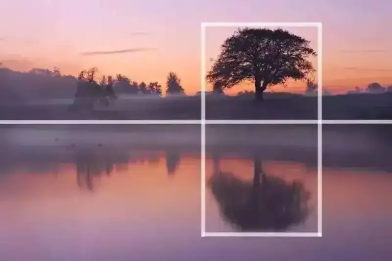
3. Foreground and depth
In a photo with a foreground, adding depth is a smart move. Photography is flat, but this gives a three-dimensional sense of immersion.
The photo below shows a waterfall in Norway, and the rocks in the river make a great foreground. This also works very well with a wide-angle lens.
4. Frame within a frame
Adding a frame within a frame is another effective way to add depth.
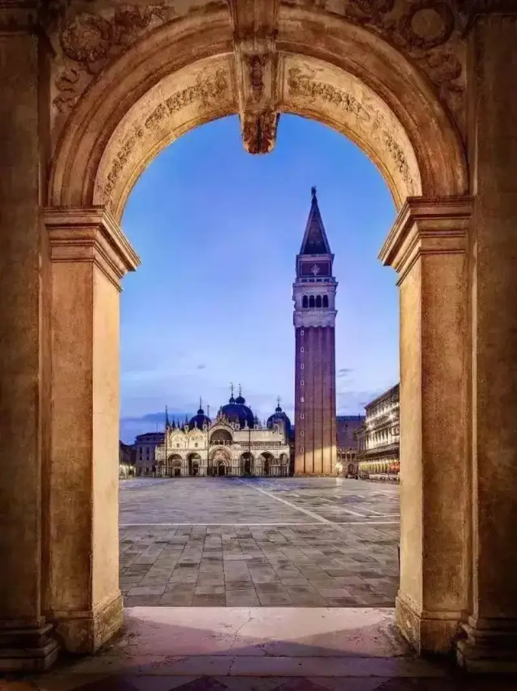
5. Leading lines
Leading lines help the viewer enter the photo and focus on the important elements. Roads, walls, or patterns can all serve as leading lines.
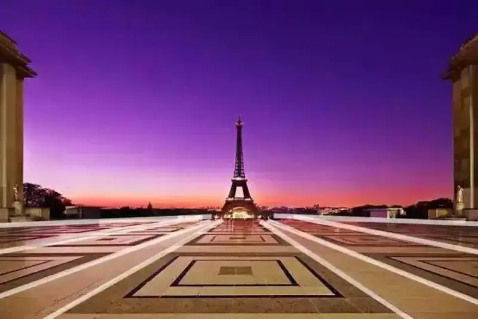
6. Diagonals and triangles
People often say diagonals and triangles add dynamic tension to a photo.
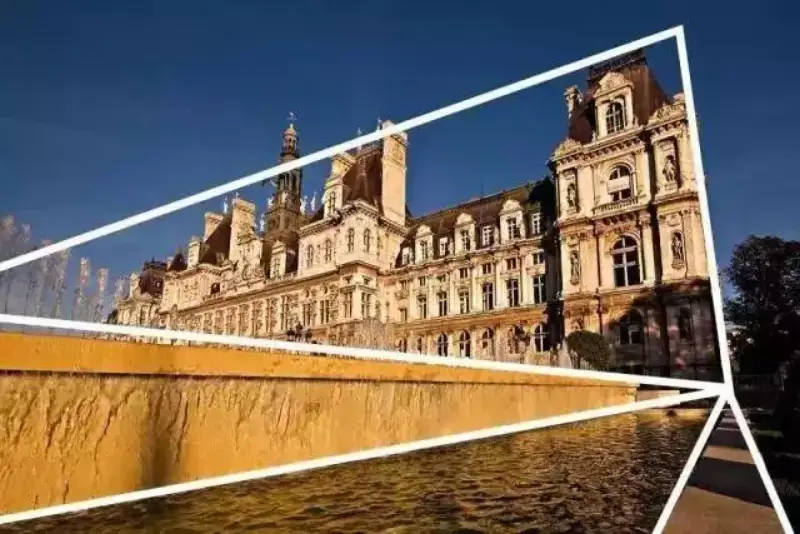
7. Patterns and textures
People are drawn to patterns by instinct. A series of arches, or the petals of one flower, can give a harmonious, pleasing visual experience.
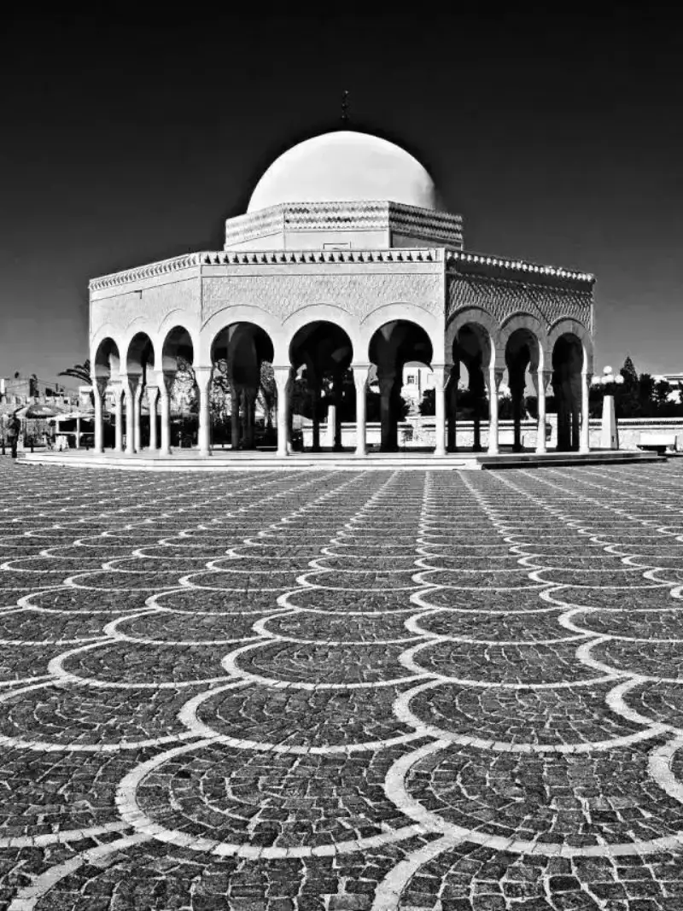
8. The odd-number rule
In photography, this rule means that when the objects in a photo number an odd count, the eye finds it more comfortable and natural, and the photo looks more appealing.
9. Fill the frame
In some cases, filling the whole frame with the subject, leaving little or no space, makes a strong impression. This keeps the viewer free of distraction and draws them straight to the subject the photographer wants to show.
10. Negative space
The opposite of rule 8, leaving empty space around the subject you want to show, also makes the shot appealing. It creates a minimal feel. If filling the frame is like a striking oil painting, then this idea of empty space is more like the vast distance of an ink painting. Yet it still forces your attention onto the object the photographer wants to show.
11. Minimalism
In the last rule, we saw the power of simplicity. The idea that less is more has its own charm in photography. You can also build a simple composition, zoom in on part of the subject, and focus on one specific detail.
12. Isolate the subject
Isolating your subject with shallow depth of field is a very effective way to simplify composition. Use a wide aperture to blur a background that might pull your eye away. This trick looks especially useful in portraits.
13. Change your angle
Many photos are shot from a normal eye-level view. Shooting from high above, or from low below, is a good way to change your angle. You get a different composition than usual, and it is more fun.
14. Find color combinations
Color itself is a composition tool that is often overlooked. Color theory is familiar to graphic, fashion, and interior designers. Certain color pairings stimulate the eye in a good way.
15. The rule of space
The rule of space is about the direction the subject faces, or the direction it moves. If you shoot a moving car, the empty space in front of it should be larger than the space behind it.
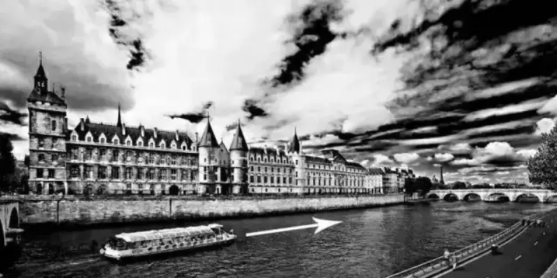
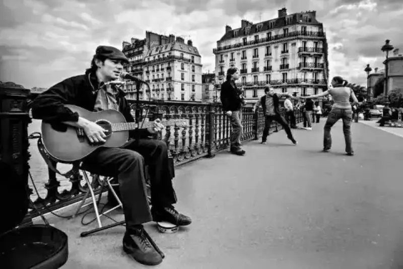
16. The left-to-right rule
This idea is simple: just as we read from left to right, we also read a photo from left to right.
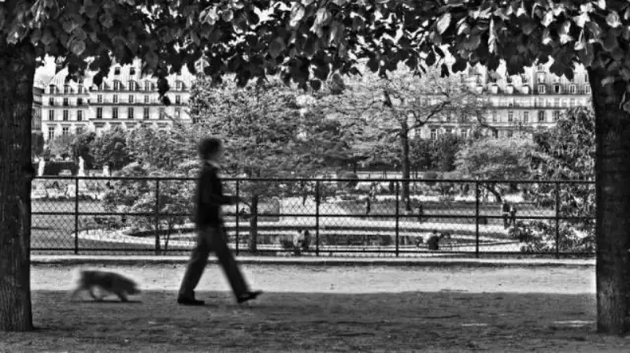
17. Balance the elements
Recall the rule of thirds, where we often place the important subject on a grid line. Sometimes this makes the frame feel unbalanced. To fix this, you can place another object, the second most important one, on the other side of the frame.
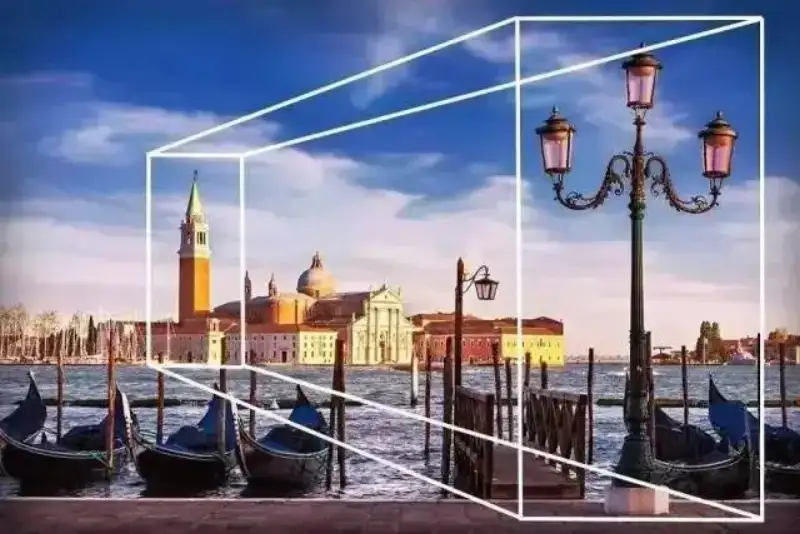
18. Juxtaposition
Juxtaposition is a very powerful composition tool. It places two or more elements in one scene to create contrast or mutual highlight.
19. Golden triangle
Golden triangle composition is very similar to the rule of thirds. Instead of a rectangular grid, we connect the frame diagonals and divide it into triangles. This helps create the dynamic tension we mentioned in rule 6.
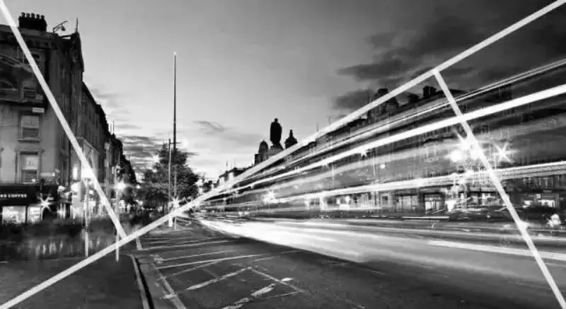
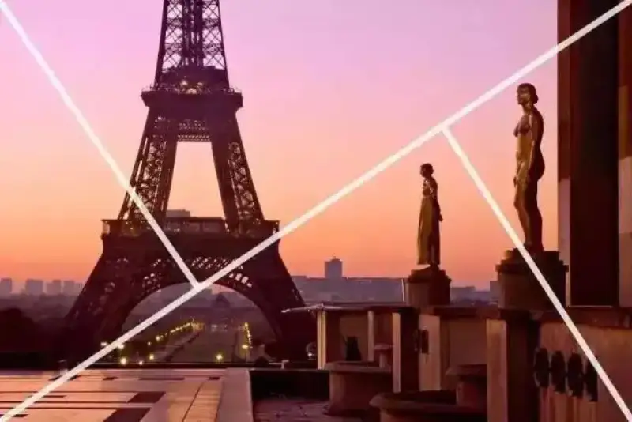
20. Golden ratio
Divide a line into two parts, so that the ratio of the shorter part to the longer part equals the ratio of the longer part to the whole. The ratio is an irrational number, and its first three digits are 0.618. This is the golden ratio. The golden spiral below uses the same ratio, and it is called the Fibonacci spiral.
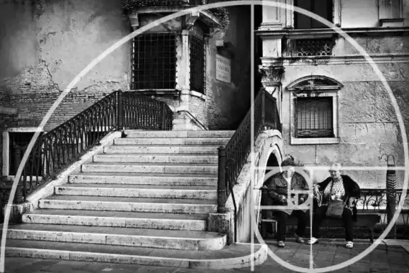